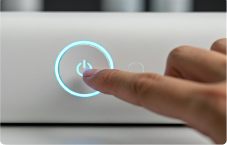

Como utilizar o LUMIS
Bem-vindo ao guia interativo do Sistema Oralização Multissensorial. Aprenda a configurar e utilizar o LUMIS para uma experiência educacional completa.
Começar Tutorial
Antes de Começar
Certifique-se de que tudo está pronto para sua sessão de aprendizado.
Carregar
Mantenha o dispositivo com carga completa.
Conectar
Pareie via Bluetooth com seu tablet ou PC.
Abrir app
Inicie o aplicativo LUMIS Educacional.
Ajustar volume
Configure o áudio para um nível confortável.
Manual Passo a Passo
Ligar o Dispositivo
Pressione o botão de energia localizado na lateral do LUMIS por 3 segundos até que os indicadores LED comecem a pulsar em azul suave.

Posicionamento
Coloque o dispositivo em uma superfície plana e estável, mantendo uma distância de aproximadamente 30cm para garantir a melhor captação sensorial.
Interação Tátil
Utilize os sensores táteis frontais para navegar entre as lições. Sinta o feedback vibratório suave que confirma sua seleção.
Oralização
Acompanhe as luzes que guiam o ritmo da fala e da leitura correta.
Feedback
Observe as cores: Verde para acerto, Amarelo para revisão e Azul para continuidade.